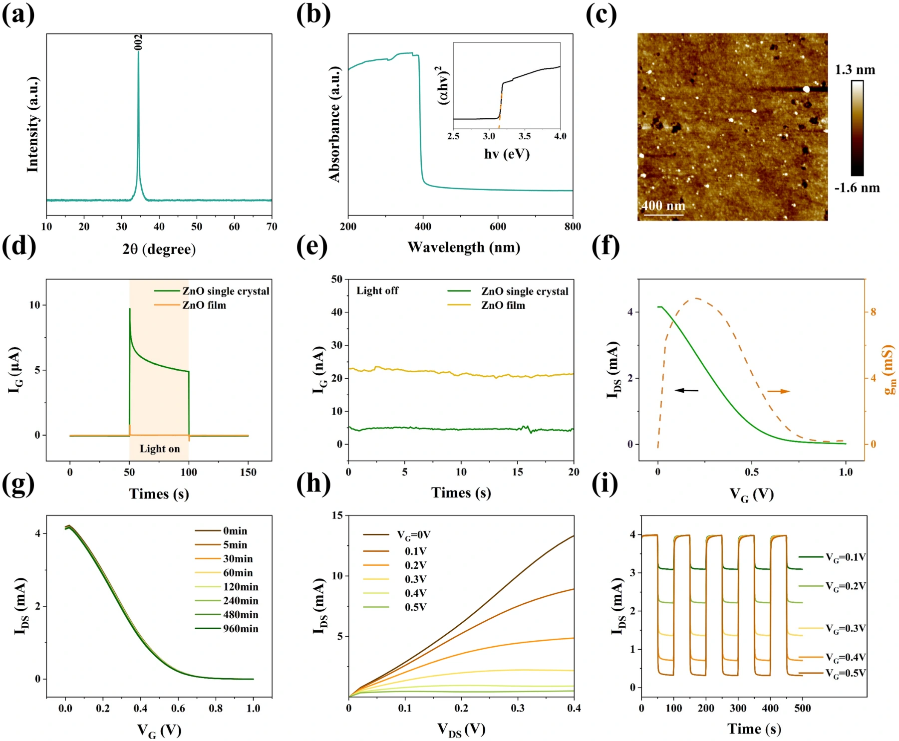
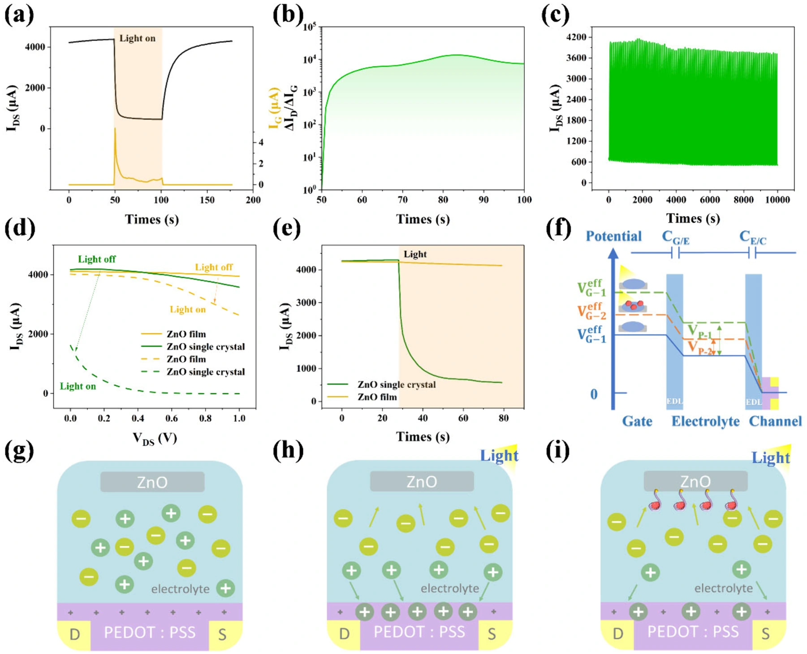

单晶 ZnO 光电化学晶体管：高灵敏凝血酶检测
将单晶 ZnO 光敏栅极、金纳米颗粒与凝血酶适配体结合，以 PEDOT:PSS 有机沟道放大界面识别信号，构建材料、光电转换与生物检测协同的传感器。
(2.35 ± 0.21) pM凝血酶检测限
10⁻¹¹–10⁻⁶ M检测浓度范围
95%空气存放 120 天电流保持率
光敏栅极连接分子识别与沟道读出
单晶 ZnO 作为光敏栅极，表面金纳米颗粒为适配体固定提供界面。凝血酶特异性结合改变栅极界面过程，再通过电解质耦合至 PEDOT:PSS 沟道，将识别事件转换为可测的漏极电流。

结构质量改善光电转换
XRD、吸收光谱与 AFM 表征单晶的结构及表面。与 ZnO 薄膜相比，单晶栅极表现更强的光响应与较低暗电流；有机晶体管的转移、输出曲线进一步检验沟道调控能力。

光电位驱动有机沟道去掺杂
光照产生的栅极光电位驱动 PEDOT:PSS 去掺杂，使耗尽型器件漏极电流下降。单晶栅极增强这一调控；100 次开关、约 10000 s 的测试验证重复响应，空气中存放 120 天后电流保持约 95%。

界面阻抗变化转换为浓度信号
凝血酶结合适配体后，界面阻抗增加、光电位减小，因而光照引起的漏极电流下降幅度减小。浓度校准覆盖 10⁻¹¹–10⁻⁶ M，检测限为 (2.35 ± 0.21) pM，并通过干扰物比较评估选择性。研究展示传感原型性能，复杂临床样本与实际应用仍需进一步验证。

论文来源
ZnO Single-Crystal-Driven Organic Photoelectrochemical Transistors for Improved Human Thrombin Detection
Yu-Xuan Chen, Ye-Song Xu, Zi-Wen Dai, Hui-Yan Zheng, Ting Cai, Ya-Li Sun, Ming Chen, Hong Wang, Hui Mei, Sheng-Hua Liu
The Journal of Physical Chemistry Letters 16 (2025), 13147–13154
DOI：10.1021/acs.jpclett.5c03358AMBIC LaboratorySUN YAT-SEN UNIVERSITY